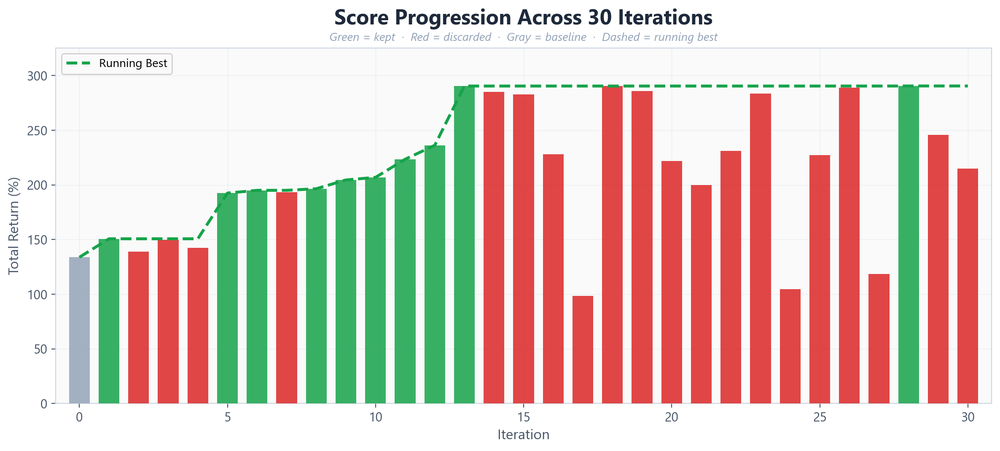
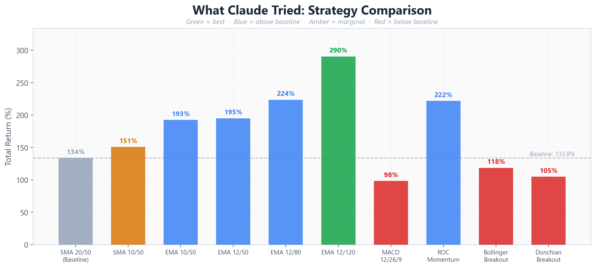
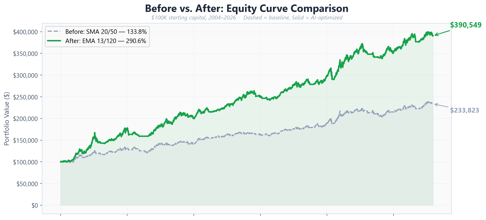

In early March 2026, Andrej Karpathy released autoresearch - a framework that lets AI agents run experiments autonomously overnight. The idea is elegant: give an agent a codebase, a measurable metric, and a simple rule - if the change improves the metric, keep it; if not, revert it. Within days, the repo had over 28,000 GitHub stars. Shopify's CEO ran it on an internal model and reported a 19% performance gain from 37 experiments run while he slept.
The original autoresearch was built for machine learning - optimizing training code for a small language model. But the core pattern is domain-agnostic: constrain the scope, define success as a number, mechanize the verification, and let the agent iterate. We wanted to see what happens when you point this loop at a different problem entirely: trading strategy development.
The Setup
We started with the simplest possible trading strategy: a Simple Moving Average (SMA) crossover. When the 20-day moving average crosses above the 50-day moving average, buy. When it crosses below, sell. It's the "hello world" of quantitative trading - easy to understand, easy to measure, and easy to improve.
The strategy was backtested on a small portfolio of three liquid securities - SPY, QQQ, and AAPL - using daily data from 2004 through March 2026. The backtester, Light Water's open-source engine, runs a full portfolio simulation with realistic trading costs: slippage, commissions, and position sizing constraints.
The metric we chose was total return percentage. Not Sharpe ratio, not risk-adjusted anything - just raw portfolio growth from $100,000 starting capital. We wanted the most tangible, visual metric possible: did the equity curve go up or down?
The baseline SMA 20/50 strategy delivered a 133.8% total return over the test period. Reasonable, but nothing remarkable. This became iteration zero - the starting point for the AI to improve.
The Autoresearch Loop
We built a Claude Code skill that implements the autoresearch pattern for our backtester. The loop works like this: Claude reads the current strategy file, makes one focused change, commits it to git, runs the full backtest, checks the score, and either keeps the change or reverts it. Then it moves to the next iteration immediately, without asking for permission or waiting for human input.
The key constraints that make this work: Claude can only modify the strategy file and a few config parameters. It cannot touch the backtester engine, the data pipeline, or the scoring script. Every change must be atomic - one modification per iteration, so if something breaks, we know exactly what caused it. And every successful change is committed to git, creating a complete audit trail of the strategy's evolution.
We set Claude loose with a simple prompt: "Run 30 iterations. Improve the total return." Then we walked away.

The insight from Karpathy's work applies directly here: autonomy scales when you constrain scope, clarify success, and mechanize verification. The agent optimizes tactics while humans optimize strategy.
What Claude Discovered
The 30 iterations ran in just under 20 minutes. Of the 30 attempted changes, 11 were kept and 20 were reverted - a 37% keep rate, remarkably close to the rates reported in other autoresearch applications.
Here's what stood out from the evolution:

The SMA to EMA Switch
Claude's first major move came at iteration 5: switching from Simple Moving Averages to Exponential Moving Averages. EMAs weight recent prices more heavily than older ones, making them more responsive to trend changes. This single change jumped the return from 150.7% to 192.6% - the largest single-iteration improvement in the entire run.
This is notable because it's not a parameter tweak. It's a structural change in how the strategy interprets price data. The agent recognized that the fundamental indicator type was a bottleneck, not just its parameters.
Systematic Slow EMA Widening
After establishing the EMA crossover as the base strategy, Claude began a methodical exploration of the slow EMA period. Starting from 50, it tested 55, 60, 70, 80, 100, and 120 - keeping each improvement and reverting each decline. The slow EMA landed at 120 as the optimal value, with the return climbing from 192.6% to 290.5% through this progression.
What's interesting is the pattern of exploration. Claude didn't jump randomly between values. It incrementally widened the slow EMA, observed that each step improved returns, and continued in the same direction until it hit diminishing returns at 150. This is gradient-following behavior - the agent learned which direction to push the parameter.
What Failed
Not everything worked. Claude tried MACD crossover (12/26/9), which dropped the return to 98.3% - reverted immediately. It attempted a Rate of Change momentum strategy at 221.8% - better than the original baseline but worse than the current best. Bollinger band breakouts produced 118.5%. A Donchian channel approach managed 104.9%. An RSI filter added on top of the EMA crossover produced no improvement at all - the exact same score, suggesting the filter was neither helping nor hurting.
The SPY SMA200 trend filter - a common institutional overlay that only allows trades when the broad market is in an uptrend - actually reduced returns from 290.5% to 199.9%. In backtesting, this filter removes both losing trades in bear markets and winning trades in early recoveries. The net effect was negative.

The Final Strategy
The optimal configuration that emerged from 30 iterations: an EMA crossover with a fast period of 13 and a slow period of 120. The fast EMA was fine-tuned from 12 to 13 in the final iterations - a marginal improvement of 290.49% to 290.55%.
The resulting strategy trades less frequently than the baseline (92 trades vs. 172), holds positions longer, and captures more of each trend by using a much wider spread between the fast and slow averages. The 120-period slow EMA effectively acts as a 6-month trend filter, only entering positions when a stock's short-term momentum aligns with its half-year direction.


What This Means
This experiment wasn't about finding a profitable trading strategy - as Karpathy himself noted, the goal of autoresearch isn't to produce novel discoveries but to systematically explore a well-defined space. What's significant is the process: an AI agent, given appropriate constraints and a clear metric, can autonomously navigate the parameter space of a trading strategy and converge on meaningful improvements.
Chris Worsey at General Intelligence Capital took a different approach with his ATLAS system - 25 AI agents debating market direction daily, with their prompts evolving through the same keep/revert loop. His system achieved +22% returns over 173 trading days with real capital. The key difference: Worsey's agents optimize prompts (investment theses), while our approach optimizes code (strategy logic). Both validate the core principle that autonomous iteration works in finance.
The implications for quantitative strategy development are practical. Parameter sweeps that would take a researcher hours of manual testing can now run autonomously in minutes.
A parameter sweep would have found the optimal EMA periods faster. What it wouldn't have done is suggest switching from SMA to EMA in the first place - that's a structural change, not a parameter change, and it was responsible for the largest single-iteration improvement in the entire run.
The agent doesn't get tired, doesn't develop confirmation bias, and doesn't skip unpromising-looking parameter combinations. Every iteration is logged, every change is auditable through git history, and every result is reproducible.
The question isn't whether AI agents can improve trading strategies. They already can. The question is: what constraints and metrics produce the most useful exploration?
We'll be running more experiments in the coming weeks - different base strategies, different asset classes, longer iteration runs. Each experiment will be documented here with full methodology and results. The autoresearch pattern is general enough to apply to any measurable aspect of strategy development, from entry logic to position sizing to risk management. The loop is simple. The possibilities are not.
Leave a comment - join the conversation
Share your thoughts, questions, or insights on this article. We'd love to hear your perspective.
Comment on LinkedIn